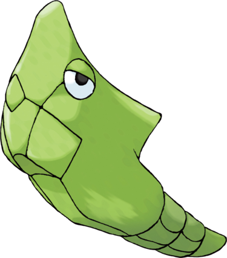

Chrysacier est un Pokémon cocon intégralement vert. Courbé vers l'arrière, il possède deux yeux à demi fermés avec des sclères blanches (jaune pâle dans l'animé). Sous ses yeux, plusieurs plaques prennent la forme d'un museau. Il possède une pointe au milieu du dos. L'extrémité inférieure de son corps comporte deux anneaux striés.